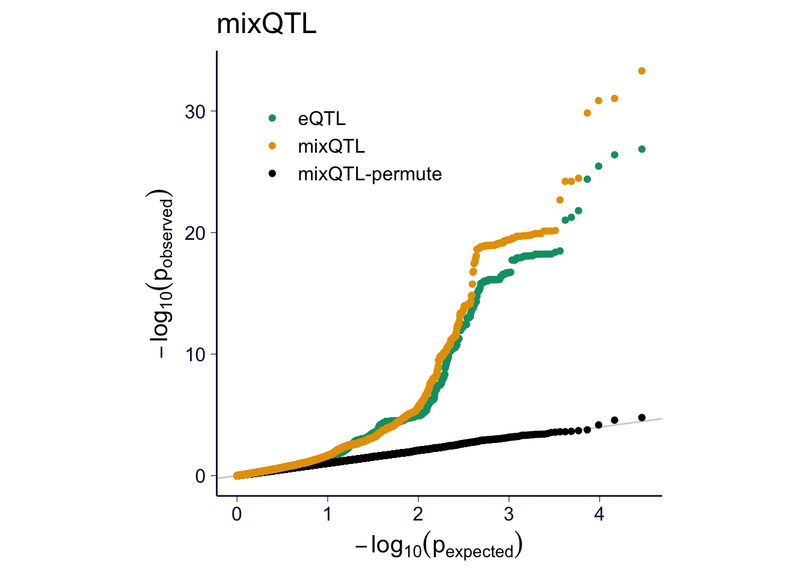

library(dplyr)
library(ggplot2)
library(data.table)
options(datatable.fread.datatable = F)
library(pander)
theme_set(theme_bw(base_size=15))
source('https://gist.githubusercontent.com/liangyy/43912b3ecab5d10c89f9d4b2669871c9/raw/8151c6fe70e3d4ee43d9ce340ecc0eb65172e616/my_ggplot_theme.R')
cbPalette <- c('ascQTL' = "#999999", 'mixQTL' = "#E69F00", 'trcQTL' = "#56B4E9", 'eQTL' = "#009E73", "#F0E442", "#0072B2", "#D55E00", "#CC79A7", 'ascQTL-permute' = "#000000", 'trcQTL-permute' = "#000000", 'mixQTL-permute' = "#000000")run on four genes (see script at misc_scripts/mixqtl_permutation/run.sh)
genes = c('ENSG00000000457', 'ENSG00000001461', 'ENSG00000002834', 'ENSG00000277734')
df_asc = list()
df_trc = list()
df_meta = list()
for(i in genes) {
d = readRDS(paste0('~/Desktop/mixqtl-pipeline-results/misc_scripts/mixqtl_permutation/perm-', i, '.mixqtl_permute.rds'))
df_asc[[i]] = data.frame(pval = d$pval.asc, bhat = d$bhat.asc, se = d$se.asc, variant = d$variant_id, gene = i)
df_trc[[i]] = data.frame(pval = d$pval.trc, bhat = d$bhat.trc, se = d$se.trc, variant = d$variant_id, gene = i)
df_meta[[i]] = data.frame(pval = d$pval.meta, bhat = d$bhat.meta, se = d$se.meta, variant = d$variant_id, gene = i)
}
df_asc = do.call(rbind, df_asc)
df_trc = do.call(rbind, df_trc)
df_meta = do.call(rbind, df_meta)df_asc2 = list()
df_trc2 = list()
df_meta2 = list()
for(i in genes) {
d = fread(paste0('zcat < ~/Desktop/mixqtl-pipeline-results/gtex_v8-results/mixqtl/Whole_Blood/result-mixqtl.', i, '.txt.gz'))
df_asc2[[i]] = data.frame(pval = d$pval.asc, bhat = d$bhat.asc, se = d$se.asc, variant = d$variant_id, gene = i)
df_trc2[[i]] = data.frame(pval = d$pval.trc, bhat = d$bhat.trc, se = d$se.trc, variant = d$variant_id, gene = i)
df_meta2[[i]] = data.frame(pval = d$pval.meta, bhat = d$bhat.meta, se = d$se.meta, variant = d$variant_id, gene = i)
}## Taking input= as a system command ('zcat < ~/Desktop/mixqtl-pipeline-results/gtex_v8-results/mixqtl/Whole_Blood/result-mixqtl.ENSG00000000457.txt.gz') and a variable has been used in the expression passed to `input=`. Please use fread(cmd=...). There is a security concern if you are creating an app, and the app could have a malicious user, and the app is not running in a secure environment; e.g. the app is running as root. Please read item 5 in the NEWS file for v1.11.6 for more information and for the option to suppress this message.## Taking input= as a system command ('zcat < ~/Desktop/mixqtl-pipeline-results/gtex_v8-results/mixqtl/Whole_Blood/result-mixqtl.ENSG00000001461.txt.gz') and a variable has been used in the expression passed to `input=`. Please use fread(cmd=...). There is a security concern if you are creating an app, and the app could have a malicious user, and the app is not running in a secure environment; e.g. the app is running as root. Please read item 5 in the NEWS file for v1.11.6 for more information and for the option to suppress this message.## Taking input= as a system command ('zcat < ~/Desktop/mixqtl-pipeline-results/gtex_v8-results/mixqtl/Whole_Blood/result-mixqtl.ENSG00000002834.txt.gz') and a variable has been used in the expression passed to `input=`. Please use fread(cmd=...). There is a security concern if you are creating an app, and the app could have a malicious user, and the app is not running in a secure environment; e.g. the app is running as root. Please read item 5 in the NEWS file for v1.11.6 for more information and for the option to suppress this message.## Taking input= as a system command ('zcat < ~/Desktop/mixqtl-pipeline-results/gtex_v8-results/mixqtl/Whole_Blood/result-mixqtl.ENSG00000277734.txt.gz') and a variable has been used in the expression passed to `input=`. Please use fread(cmd=...). There is a security concern if you are creating an app, and the app could have a malicious user, and the app is not running in a secure environment; e.g. the app is running as root. Please read item 5 in the NEWS file for v1.11.6 for more information and for the option to suppress this message.df_asc2 = do.call(rbind, df_asc2)
df_trc2 = do.call(rbind, df_trc2)
df_meta2 = do.call(rbind, df_meta2)library(bigrquery)
set_service_token('~/Downloads/gtex-awg-im-6077f6f6b70b.json')## Warning: 'set_service_token' is deprecated.
## Use 'bq_auth(path = ...)' instead.
## See help("Deprecated") and help("bigrquery-deprecated").cond = paste0(paste0("gene_id like '", genes, "%'"), collapse = ' or ')
tbl = bq_project_query(x = 'gtex-awg-im',
query = paste0('select * from `gtex-awg-im.GTEx_v8_eQTL.Whole_Blood_allpairs` where ', cond)
)## Complete## Billed: 0 Bdf_gtex = bq_table_download(tbl)## Downloading 29,218 rows in 3 pages.## Downloading data [==================>---------------------------------------] 33% ETA: 3s
## Downloading data [======================================>-------------------] 67% ETA: 1s
## Downloading data [==========================================================] 100% ETA: 0s##
Parsing [========================------------------------------------------------] ETA: 0s
Parsing [========================================================================] ETA: 0s
df_eqtl = df_gtex %>% select(pval_nominal, slope, slope_se, variant_id, gene_id) %>% rename(pval = pval_nominal, bhat = slope, se = slope_se, variant = variant_id, gene = gene_id) %>% mutate(gene = trim_dot(gene))
eqtl = intersect(paste(df_eqtl$variant, df_eqtl$gene), paste(df_asc$variant, df_asc$gene))df_eqtl = df_eqtl %>% filter(paste(variant, gene) %in% eqtl)
df_asc = df_asc %>% filter(paste(variant, gene) %in% eqtl)
df_trc = df_trc %>% filter(paste(variant, gene) %in% eqtl)
df_meta = df_meta %>% filter(paste(variant, gene) %in% eqtl)
df_asc2 = df_asc2 %>% filter(paste(variant, gene) %in% eqtl)
df_trc2 = df_trc2 %>% filter(paste(variant, gene) %in% eqtl)
df_meta2 = df_meta2 %>% filter(paste(variant, gene) %in% eqtl)df_qq = data.frame(
pval = c(
df_eqtl$pval,
df_asc$pval,
df_trc$pval,
df_meta$pval,
df_asc2$pval,
df_trc2$pval,
df_meta2$pval
),
method = c(
rep('eQTL', nrow(df_eqtl)),
rep('ascQTL-permute', nrow(df_asc)),
rep('trcQTL-permute', nrow(df_trc)),
rep('mixQTL-permute', nrow(df_meta)),
rep('ascQTL', nrow(df_asc)),
rep('trcQTL', nrow(df_trc)),
rep('mixQTL', nrow(df_meta))
)
)
df_qq$pval[is.na(df_qq$pval)] = runif(sum(is.na(df_qq$pval)))
p = my_qqplot(df_qq$pval, df_qq$method)
pfor(m in c('ascQTL', 'trcQTL', 'mixQTL')) {
sub = df_qq %>% filter(method %in% c('eQTL', m, paste0(m, '-permute')))
p = my_qqplot(sub$pval, sub$method)
p = p + th + scale_color_manual(values = cbPalette)
p$layers <- c(geom_abline(slope = 1, intercept = 0, color = 'lightgray'), p$layers)
p = p + theme(legend.position = c(0.3, 0.8), legend.title = element_blank())
p = p + ylab(expression(-log[10](p[observed]))) + xlab(expression(-log[10](p[expected])))
p = p + theme(aspect.ratio = 1)
print(p + ggtitle(m))
ggsave(paste0('../output/gtex-v8-pipeline-eqtl-matrix-new-cutoffs-and-caps-permutation-', m, '.png'), p, width = 4, height = 4)
}